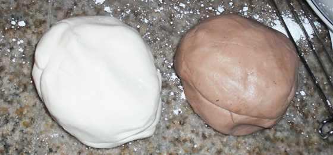

Como decorar tu torta
Hoy en dia hay miles de opciones a la hora de decorar tu torta, te damos los mejores tips para que sepas que tipo de cobertura usar dependiendo de la variedad de bizcocho.
Si queremos un pastel que refleje perfectamente nuestro estilo propio o del agasajado, la mejor idea es crearlo nosotros mismo y por eso hoy vamos a hablar de la decoración de tortas paso a paso y sus diversos estilos.
Decoraciones Para Eventos
La decoración de los pasteles va a depender de la ocasión, si es para una boda, un bautizo, una torta de cumpleaños de niños o adultos, aniversario, entre otros.
La ocasión y tipo de evento determinará la paleta de colores, texturas, imágenes y hasta los sabores.
Por ser tan amplio el tema, nos vamos a centrar en 4 tipos de decoraciones de tortas paso a paso: la decoración con fondant, con merengue, con plantillas de dibujos y la decoración de tortas con glasé.
Primeras Tareas Para la Decoración de Tortas Paso a Paso
Con mucha atención tendremos que lavar los implementos que nos ayudarán en nuestra actividad repostera.
Con agua y jabón, lavamos, enjuagamos y secamos todas nuestras herramientas de trabajo antes de empezar.
De igual manera es importante lavar, previo a la labor, nuestras manos como cada vez que las ensuciemos mientras decoramos.
Decoración de Tortas Paso a Paso con Merengue
El merengue es una mezcla de claras de huevos y azúcar que se utiliza para decorar como para rellenar pasteles.
Según su consistencia se puede dividir en tres tipos: crema ligera, de consistencia media y crema dura; cada una de estas consistencias nos permiten decorar de distintas formas.
Por ejemplo, podríamos hacer estructuras verticales que den protagonismo imponente a nuestro pastel decorando torres de bélicos castillos, girasoles, hermosos mensajes y cualquier tema que impulse nuestra imaginación creativa.
La crema ligera brinda la posibilidad de hacer trazos finos en la decoración del pastel y hasta expresar mensajes, dedicatorias o nombres.
Mientras que la crema de consistencia media es recomendable que la utilicemos para cubrir todo el pastel o para decoraciones horizontales, debido a que por su consistencia no se mantendrían en firmes estructuras verticales.
Por otro lado, la crema dura es utilizada para pasteles verticales en los que queramos hacer vegetaciones o construcciones épicas.
La crema dura queda en un punto exacto, si termina siendo demasiado blanda, la decoración podrá demolerse mientras que al ser demasiado dura, las grietas serán sinónimo denotativo de esto.
Herramientas Para Trabajar con Fondant
Para trabajar correctamente el fondant y de manera más fácil, debemos contar con ciertas herramientas que nos los permitirán.
Rodillo para Fondant: Los rodillos para fondant están realizados con materiales antiadherentes e impermeables.
El material más común de ellos es el Polipropileno (polímero apto para uso alimentario).
Debemos aclarar que no son los típicos rodillos de madera y estos vienen en diferentes medidas.
- Rodillo para Fondant de 22 cm, se utiliza para estirar el fondant si lo que se quiere hacer son formas, bordes, encajes y placas, esto es porque posee guías de anilla de silicona. Se puede estirar a diferentes espesores según el color de anilla que se ponga a ambos lados.
- Rodillo para fondant de 40 cm, es el rodillo perfecto si lo que buscamos es extender el fondant para cubrir tortas. Lo más llamativo de este es que vienen con guías laterales que ayudan a precisar el grosor de nuestra masa.
Silpat: es una plancha de silicona sobre la que se trabaja el fondant con gran facilidad dada su antiadherencia.
Spray desmoldante: es una herramienta muy útil que se aplica sobre el fondant para evitar que éste se peque al rodillo o las manos. En caso de contar con este producto se puede reemplazar con azúcar pulverizada o maicena.
Por otro lado, para lograr moldear figuras que se utilizarán en la decoración de tortas paso a paso, los instrumentos totalmente necesarias son:
- El set de 6 herramientas para decorar fondant
- Rodillo para tiras de fondant, para grabar y dar relieve de forma fácil.
- Cortadores con expulsor
- Alisador de fondant o Smoother
- Colorantes
- Cola alimentaria para pegar sprinkles, hiela o icing.
- La goma tragacanto.
Decoración de Tortas Paso a Paso con Fondant
El fondant es una de las cubierta más utilizadas, sobre todo hoy en día en la decoración de tortas paso a paso infantiles; ahora bien, existen 4 tipos de fondant: Australiana, Satinada, Gamuza y Malvavisco y a continuación, expondremos brevemente cómo se debe realizar la decoración de tortas paso a paso con fondant.
El paso a paso aplica a los diferentes tipos de fondant.
1. En los cursos de pastelería nos indican que nuestro bizcocho debe tener un excelente acabado y consistencia; es decir, debe estar nivelado, parejo y con una corteza sólida.
2. Comenzaremos untando una crema de libre elección (dulce de leche, merengue, buttercream, etc.) por toda la superficie del bizcochuelo (arriba y los laterales)
En este paso se puede aprovechar para rellenar con crema cualquier hendidura o imperfección de la superficie.
Debemos de esparcirla de la forma más uniforme posible.
3. En los cursos de repostería también aprendemos hacer nuestro fondant o sacar alguno que esté almacenado en óptimas condiciones.
En este punto debemos elegir el tipo de fondant que queremos y los colores que vamos a necesitar para nuestro diseño.
La masa para fondant la venden de distintos colores pero es una excelente opción pintarla nosotros mismos con colorante artificial.

4. Chequearemos que tenemos todas los utensilios a mano como el rodillo, el cortador, el cuchillo y todo el que consideremos necesario.
Prepararemos el área para extender el fondant y para evitar que se pegue se puede utilizar azúcar pulverizada en el mesón, el rodillo como en las manos.
Si vamos a pintar nuestra masa este es el momento de hacerlo y una forma bastante original de pintar el fondant es dejando el color vegetal marmoleado.
Agregar las decoraciones que deseamos como flores de azúcar, cadenetas con crema, figuras moldeados o la que sea más conveniente según la ocasión.
Decoración de Tortas Paso a Paso con Impresiones
Para hacer un pastel decorado, hay dos tipos de impresiones que se hacen en tinta vegetal: las de papel de azúcar y las del papel de arroz; ambas comestibles.
En el caso del papel de arroz lo que vamos a hacer es que dibujamos la forma que queramos y lo usamos como patrón para rellenar tortas con crema.
En cuanto al papel de azúcar este es el procedimiento para su uso:
1. Buscamos el diseño que necesitamos y lo transferimos al papel.
En el papel de azúcar lo podemos mandar a imprimir a full color.
2. Debemos asegurarnos antes de empezar que el bizcocho esté bien frío porque si no lo está el calor puede dañar nuestra decoración. Para acelerar en enfriado lo colocamos sobre una rejilla.
3. Ahora pasamos nuestro hermoso y perfecto bizcocho a la base que lo exhibirá en el evento. Un truco que funciona muchísimo es utilizar buttercream para pegar el bizcocho a la base. Esto se hace para evitar tener todo listo y que se nos dañe en el traslado.
4. Cubrimos con el fondant según lo hablado anteriormente, cortamos los excesos y pasamos a medir la imagen para ajustarla con la tijera al tamaño perfecto.
5. Procedemos a pegar el papel a la torta utilizando ½ cucharadita de CarboxiMetilCelulosa (CMC) diluido en 75 ml de agua, ayudándonos de un pincel y cubriendo toda la imagen para integrar, esto lo haremos con delicadeza para evitar manchar el fondant.
6. Luego retiramos lentamente el acetato donde viene el papel de azúcar, con mucho cuidado para no dañar el trabajo.
Algo que necesitamos saber con la finalidad de lograr nuestro propósito es que debemos cuidar que no estamos trabajando en un clima demasiado caliente y/o húmedo porque el papel reaccionará negativamente a esto.
Decoración de Tortas con Glasé
La mezcla de glasé se prepara con huevo, ¼ de taza de azúcar y jugo de limón.
Si utilizamos la mezcla del glasé, ésta nos permitirá embellecer la decoración de tortas paso a paso de manera fácil y sencilla.
De haber realizado una preparación de Glasé con consistencia liviana la mezcla no nos colaborará al momento de decorar; sin embargo podríamos bañar otra creaciones y dulces en la repostería.
A diferencia, debemos poder adquirir una mezcla bastante cremosa, ya que con ella lograríamos escribir nombres en nuestra torta o delinear dibujos.
Para hacer esto es ideal utilizar la manga repostera pues refuerza el pulso al momento de agregar la mezcla decorativa.
Si deseamos realizar volados o detalles parecidos es ideal obtener una mezcla de glasé al punto, aunque no posee brillo es ideal para realizar los acabados de nuestras decoraciones.
Ésta preparación es sumamente práctica, debido a que si lo resguardamos de manera correcta puede estar en perfecto estado durante 4 meses, teniendo en cuenta que 24 horas antes de utilizar nuestra preparación, debemos retirarla del refrigerador y batir cuidadosamente.
Si está muy suave, debemos agregar azúcar; por el contrario sí está muy sólido o duro es necesario proporcionar algunas gotas del jugo de limón a nuestra mezcla, batir nuevamente y colocarlo a temperatura ambiente
Finalmente, una mezcla de glasé con gran solidez podría ser sumamente útil al elaborar pétalos, hojas o algo que denote el reino vegetal, de la misma forma su textura resulta ser armada por su consistencia.
Todas las consistencias de la mezcla podrán ser coloreadas al gusto.
Al trabajar con el glasé es importante tener en cuenta la higiene y los cuidados que debemos proveer a nuestra mezcla entre ellos estar atentos con la temperatura ambiental y sobre todo cubrir nuestra mezcla con un paño para protegerla des polvo, malos olores o del dióxido de carbono, dañino para nuestra salud.
Volver